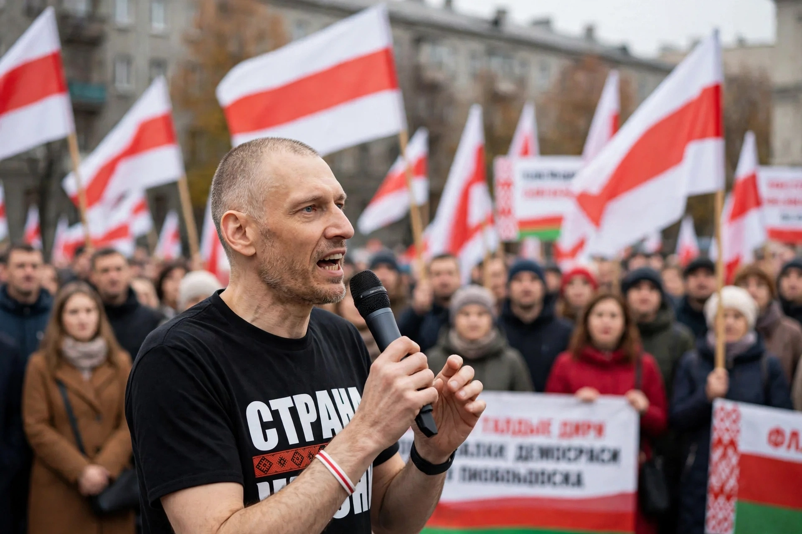

Siarhei Leanidavich Tsikhanouski (born 18 August 1978) is a Belarusian YouTuber, blogger, businessman and pro-democracy activist. His arrest in 2020, after he announced a presidential candidacy, led his wife Sviatlana Tsikhanouskaya to run in his place and become the leading opposition figure in the disputed 2020 Belarusian election.

Tsikhanouski ran businesses in Gomel and Moscow before starting the YouTube channel "A Country to Live In" (Strana dlya Zhizni) in 2019, interviewing ordinary Belarusians about economic hardship and corruption, and criticising President Alexander Lukashenko, whom he urged voters to remove — popularising the "Slipper Revolution" slogan.
He was detained in Grodno on 29 May 2020, barred from registering as a candidate, and in December 2021 sentenced to 18 years in prison for organising mass unrest and other charges widely condemned internationally as political; Amnesty International recognised him as a prisoner of conscience. An additional sentence followed in 2023. He was held largely incommunicado in Zhodzina prison.
In June 2025 Tsikhanouski was released and deported to Lithuania following US-mediated efforts, reuniting with Tsikhanouskaya in Vilnius, and vowed to continue opposition activity.